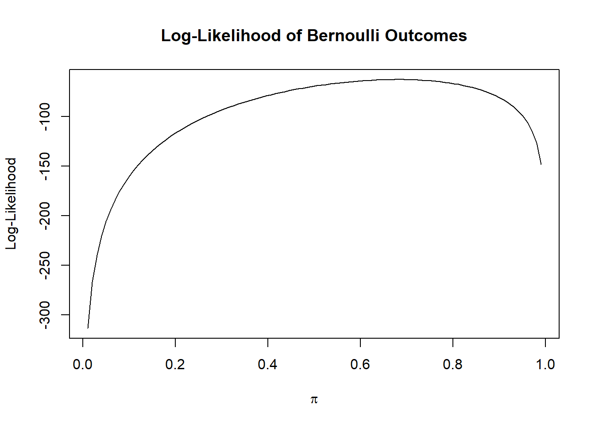
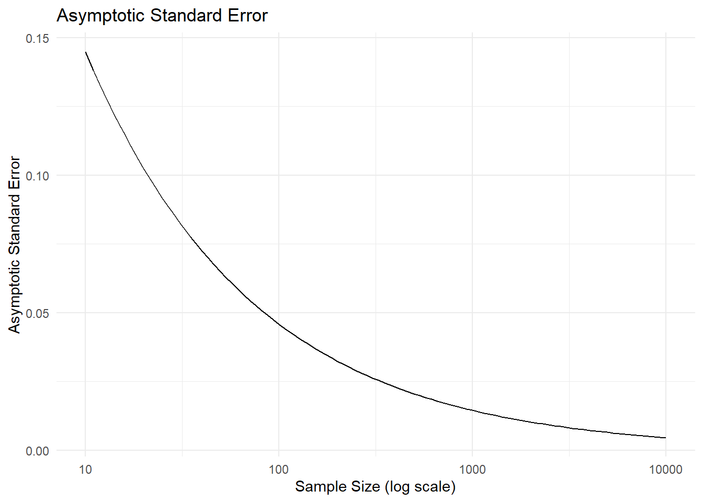

This function is key in statistical methods for estimating \(\pi\), typically by finding the value of \(\pi\) that maximizes this likelihood given the observed data.
1.3 (2 points)
Implement the log-likelihood function \(\ell(\pi; \bar{x})\) and graph it as a function of 𝜋 plugging in your observed data.
library(ggplot2)# Function to calculate the log-likelihood of the Bernoulli outcomeslog_likelihood <-function(pi, xi, n =length(xi)) {sum(xi *log(pi) + (1- xi) *log(1- pi))}# Define a sequence of pi values to evaluatepi_values <-seq(0.01, 0.99, length.out =100)# Calculate the log-likelihood for each pi valuelog_likelihood_values <-sapply(pi_values, log_likelihood, xi = bern)# Plot the log-likelihood functionplot(pi_values, log_likelihood_values, type ="l", xlab =expression(pi), ylab ="Log-Likelihood",main ="Log-Likelihood of Bernoulli Outcomes")

1.4 (2 points)
Find the maximum likelihood estimate of 𝜋 using calculus.
Given the log-likelihood function for ( n ) independent Bernoulli trials in 1.3, then first we take the derivative with respect to \(\pi\) to find the MLE:
Thus, the MLE of \(\pi\) is the sample mean of the observed data.
1.5 (2 points)
Compute the maximum likelihood estimate of 𝜋 from your simulated data
mle_pi =mean(bern)mle_pi
[1] 0.68
the maximum likelihood estimate of 𝜋 from the simulated data is 0.68
1.6 (2 points)
Find the asymptotic standard error of the maximum likelihood estimator \(\hat{\pi}_{MLE}\) using calculus.
The Hessian function for an iid sample is the second derivative of the log-likelihood function with respect to ( \(\pi\) ) is given by: \[ \ell''(\pi) = -\frac{n}{\pi(1-\pi)} \]
Taking the expected value yields the Fisher information: \[ I(\pi) = -E[\ell''(\pi)]= \frac{n}{\pi(1-\pi)} \\ \]
Finally, the variance of the maximum likelihood estimator is the reciprocal of the Fisher information: \[ Var(\hat{\pi}_{MLE}) = \frac{1}{I(\pi)} = \pi(1-\pi) \Big/ n \\ \]
Then, the asymptotic standard error of the maximum likelihood estimator for a Bernoulli distribution is found using the following equation:
Plot the asymptotic standard error as a function of sample size for sample sizes of 10- 10,000 (using logarithmic spacing for sample size)
# define pipi <-0.7# Generate sample sizes from 10 to 10,000 using logarithmic spacings.s <-round(exp(seq(log(10), log(10000),length.out =100)))# Calculate the asymptotic standard error for each sample size foor a Bernoulli distribution, the asymptotic standard error for pi_hat isS.E <-sqrt(pi * (1- pi) / s.s)# Create a data frame for plottingplotSE <-data.frame(s.s= s.s, S.E = S.E)ggplot(plotSE, aes(x = s.s, y = S.E)) +geom_line() +scale_x_log10() +# Set the x-axis to a logarithmic scalelabs(x ='Sample Size (log scale)', y ='Asymptotic Standard Error',title ='Asymptotic Standard Error') +theme_minimal()

1.8 (2 points)
Find an expression for the sample size necessary to achieve a specified standard error (for a given 𝜋).
\[\begin{align*}
SE(\hat{\pi}_{MLE})
&= \sqrt\frac{\pi(1-\pi)}{n} \\
n &= \frac{\pi(1-\pi)}{SE^2} \
\end{align*}\]
1.9 (2 points)
Implement your sample size function in R and graph it for standard errors of 10 percentage points to 0.1 percentage points.
Compute an asymptotic 95% confidence interval for 𝜋.
#calculate the meanpi_hat <-mean(bern)# Calculate standard errorn <-length(bern)SE <-sqrt(pi_hat * (1- pi_hat) / n)# Determine the z-score for a 95% confidence intervalz <-qnorm(0.975) # Two-tailed# Calculate the confidence intervalCI_lower <- pi_hat - z * SECI_upper <- pi_hat + z * SE# Display the confidence intervalCI <-c(CI_lower, CI_upper)CI
[1] 0.5885724 0.7714276
The asymptotic 95% confidence interval for was between 0.5885724 and 0.7714276
1.13 (2 points)
Calculate an asymptotic p-value for the null hypothesis \(H_{0}\) ∶ 𝜋 = 0.5.
# Null hypothesis valuepi_0 <-0.5# Sample size from 100 simulationn <-length(bern)# Standard error under H0SE_0 <-sqrt(pi_0 * (1- pi_0) / n)# Test statisticZ <- (pi_hat - pi_0) / SE_0# Calculate two-tailed p-valuep_value <-2* (1-pnorm(abs(Z)))# Output the p-valuep_value
[1] 0.0003182172
The asymptotic p-value for the null hypothesis was 0.0003182172
1.14 (2 points)
Interpret both results in scientific terms.
The 95% of the confidence intervals calculated would contain the true proportion π, and they are expected to fall within the range of 0.589 to 0.771.Since the interval does not contain the null hypothesis value of 0.5, we have evidence to suggest that the true proportion π is statistically significantly different from 0.5 at the 5% significance level.
The p-value is approximately 0.000318, which is much less than the significance level of 0.05, indicating that if the null hypothesis \(H_{0}\) ∶ 𝜋 = 0.5 were true, there would be a very low probability of observing a sample proportion as extreme as the one in this data or more extreme by random chance alone is 0.000318.
1.15 (2 points)
Find the set of binomial outcomes (values of \(\sum_{i=1}^{n} X_i\)) for which you would reject the null hypothesis.
1.16 (2 points)
Compute the probability of rejecting the null hypothesis (power), if the data-generating value of 𝜋 equals your estimate. In other words, assume that 𝜋 = \(\hat{\pi}\) and use the binomial distribution of \(\sum_{i=1}^{n} X_i\) to evaluate the power of the normal-approximation test of 𝐻0 ∶ 𝜋 = 0.5.
1.17 (2 points)
Graph the power to reject the null hypothesis as a function of sample size, using your sample estimate as the data-generating value. What sample size would you need to achieve 80% power? 90%? 95%? 99%?
1.18 (2 points)
Repeat the simulation 1000 times. Each time, record: • \(\hat{\pi}\) (the MLE of 𝜋) • \(\hat{SE}(\hat{\pi}\) (the estimated standard error of the MLE of 𝜋) • The p-value of the hypothesis test 𝐻0 ∶ 𝜋 = 0.5 vs 𝐻𝐴 ∶ 𝜋 ≠ 0.5 • whether you rejected the null hypothesis at the 𝛼 = 0.05 level • whether the confidence interval included the true value 𝜋 = 0.7
1.19 (2 points)
Create histograms and boxplots of the MLEs and estimated standard errors, with lines indicating the theoretical values.
1.20 (2 points)
Using your 1000 simulations, estimate: • the mean of the MLE • the bias of the MLE • the empirical variance of the MLE • the empirical standard error of the MLE • the mean of the estimated standard error, \(\hat{SE}=\hat{\pi}(1-\hat{\pi})/\sqrt{n}\) • the bias of the estimated standard error • the variance of the estimated standard error • the standard error of the estimated standard error • the coverage probability of the confidence intervals • the power of your hypothesis test to reject the null hypothesis 𝐻0 ∶ 𝜋 = 0.5
1.21 (2 points)
Summarize the performance of your analyses, comparing empirical and theoretical results.
1.22 (2 points)
Repeat the simulation with a simulated sample sizes of \(10^3\) and \(10^5\) binary outcomes, and summarize the results. Compare the empirical results with the theoretical results above.
1.23 (2 points)
Repeat the simulation at all three sample sizes for the scenario where the data-generating parameter 𝜋 = 0.5, thus matching the null hypothesis. Empirically assess the false positive rate of the hypothesis test.